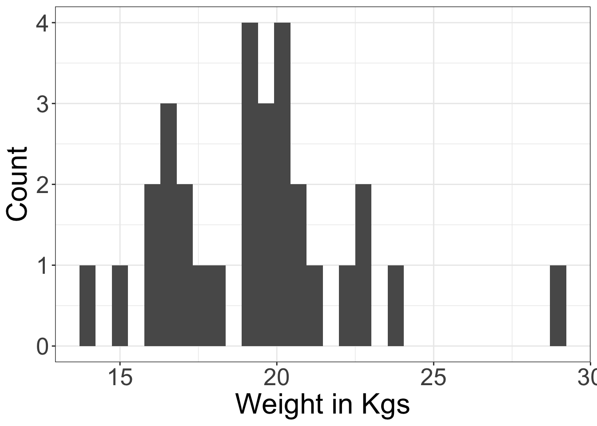

Chapter 5 Importing
5.1 A sample data set
## [1] 1207 11## # A tibble: 3 x 11
## IntDate HousehldID VillageID HhMmbrs OwnDogs DgsOwnd AdltDgs Puppies DogDied
## <chr> <chr> <dbl> <dbl> <dbl> <dbl> <dbl> <dbl> <dbl>
## 1 1/30/17 13-172-2 13 4 0 0 0 0 0
## 2 1/30/17 2-87-7 2 6 0 0 0 0 0
## 3 1/30/17 49-1-1 49 1 0 0 0 0 0
## # … with 2 more variables: NumDd <dbl>, DogBite <dbl>5.2 A sample data set
## rename the variables for clarity
dogdemography <- rename(dogdemography
, interviewDate = IntDate # format as date
, householdID = HousehldID # format as character
, villageID = VillageID # format as character
, householdMembers = HhMmbrs # format as integer
, ownDogs = OwnDogs # format as logical
, numDogsOwned = DgsOwnd # format as integer
, adultDogsOwned = AdltDgs # format as integer
, puppiesOwned = Puppies # format as integer
, dogDiedPastMonth = DogDied # format as logical
, numDogsDiedPastMonth = NumDd # format as integer
, dogBitesPastMonth = DogBite # format as logical
)5.3 A sample data set
## # A tibble: 10 x 2
## villageID count
## <dbl> <int>
## 1 2 158
## 2 10 126
## 3 13 215
## 4 28 105
## 5 35 77
## 6 49 139
## 7 53 84
## 8 55 215
## 9 67 49
## 10 68 395.4 check data consistency
5.4.1 filter() - rows/observations with matching conditions
print(dogdemography
%>% filter(.,adultDogsOwned+puppiesOwned == numDogsOwned)
%>% select(householdID,adultDogsOwned,puppiesOwned,numDogsOwned))## # A tibble: 1,207 x 4
## householdID adultDogsOwned puppiesOwned numDogsOwned
## <chr> <dbl> <dbl> <dbl>
## 1 13-172-2 0 0 0
## 2 2-87-7 0 0 0
## 3 49-1-1 0 0 0
## 4 13-224-3 1 0 1
## 5 2-109-5 0 0 0
## 6 67-9-2 0 0 0
## 7 49-256-2 0 0 0
## 8 2-155-4 0 0 0
## 9 49-256-3 0 0 0
## 10 13-8-9 0 0 0
## # … with 1,197 more rows5.5 check data consistency
5.5.1 filter() - rows/observations with matching conditions
print(dogdemography
%>% filter(.,adultDogsOwned+puppiesOwned != numDogsOwned)
%>% select(householdID,adultDogsOwned,puppiesOwned,numDogsOwned))## # A tibble: 0 x 4
## # … with 4 variables: householdID <chr>, adultDogsOwned <dbl>,
## # puppiesOwned <dbl>, numDogsOwned <dbl>5.6 check data consistency
5.6.1 distinct()
print(dogdemography
%>% group_by(.,numDogsOwned,adultDogsOwned,puppiesOwned)
%>% select(adultDogsOwned,puppiesOwned,numDogsOwned)
%>% distinct(.) )## # A tibble: 20 x 3
## # Groups: numDogsOwned, adultDogsOwned, puppiesOwned [20]
## adultDogsOwned puppiesOwned numDogsOwned
## <dbl> <dbl> <dbl>
## 1 0 0 0
## 2 1 0 1
## 3 1 1 2
## 4 4 0 4
## 5 3 0 3
## 6 2 0 2
## 7 5 0 5
## 8 2 1 3
## 9 0 2 2
## 10 0 1 1
## 11 1 3 4
## 12 3 2 5
## 13 1 2 3
## 14 1 4 5
## 15 2 5 7
## 16 2 3 5
## 17 2 2 4
## 18 1 5 6
## 19 6 0 6
## 20 6 4 105.7 check data consistency
## # A tibble: 3 x 2
## dogBitesPastMonth count
## <dbl> <int>
## 1 0 1205
## 2 1 1
## 3 99 15.8 check data consistency
dogdemography <- (dogdemography %>%
mutate(., dogBitesPastMonth =
ifelse(dogBitesPastMonth==99,NA,dogBitesPastMonth))
%>% mutate(., dogBitesPastMonthNEW = as.logical(dogBitesPastMonth)))
print(dogdemography
%>% group_by(.,dogBitesPastMonthNEW)
%>% summarize(.,count = n()) )## # A tibble: 3 x 2
## dogBitesPastMonthNEW count
## <lgl> <int>
## 1 FALSE 1205
## 2 TRUE 1
## 3 NA 15.9 Data maintenance
- Your database is
- a logical construct
- The core of the data that we maintain and validate
- maybe also a software construct
- If you are using a database program
- a logical construct
- Data in the database is:
- Non-redundant
- Relational
- Often in a “long” format (to signal values that are comparable)
5.10 Redundancy
You don’t want any redundancy in your database (although you might for entry or analysis)
Removing redundancies is a great way to check data integrity
Non-redundant information can be updated conveniently
- and without introducing new errors
- and without introducing inconsistencies
5.11 Tidy data
No redundancy
Break data into separate tables following the logic of the data
Clear “keys” to describe the information in each row
- Non-redundant, unique identifiers
- Village table has village (number) as the key
- Measurement table has id, survey as the key’
5.12 Relational
Break data into logical tables
- Information at the level where it belongs:
- Sampling event
- Individual
- Household
- Village
- Village group
5.13 Flow
Put input data into a tidy, relational form
- Clean on the way
- This is your database, whether you use database software or not
Clean, maintain and merge data in the database
Export files for analysis, presentation, etc.
- You may wind up rebuilding files like the ones you started with
- They are now quality-checked, and may also be easier to update
5.14 Making relational tables
If we had data like the Calves follow-up with infectious status data, we would want to break it into
A table at the level of calves (with values/characteristics of calves that don’t change)
A table at the level of follow-up events and corresponding variable measurements
This process leads to improved clarity, and improved cleaning
5.15 Making relational tables
## # A tibble: 30 x 6
## CalfID CalfSex sublocation CADOB ReasonsLoss RecruitWeight
## <chr> <dbl> <chr> <chr> <dbl> <dbl>
## 1 CA010110028 1 East Siboti 31/07/2009 7 19
## 2 CA010210036 2 Kidera 12/3/2008 7 15
## 3 CA010210038 1 Kidera 18/04/2008 NA 20
## 4 CA010210041 1 Kidera 27/06/2008 NA 16.5
## 5 CA010310062 2 Kokare 18/11/2007 NA 14
## 6 CA010310064 1 Kokare 3/1/2008 7 16.5
## 7 CA020510127 2 Kamunuoit 24/04/2008 NA 16
## 8 CA020610151 1 Karisa 3/11/2007 NA 19
## 9 CA020610152 1 Karisa 4/10/2007 NA 23
## 10 CA030810223 1 Igero 16/08/2008 NA 29
## # … with 20 more rows5.16 Making relational tables
#calves_follow1 <- calves_follow %>%
#gather(infection, status, Theileria.spp.:Q.Strongyle.eggs) %>%
#select(-ManualPCV) %>%
#arrange(CalfID, VisitDate, status)
calves_follow1## # A tibble: 1,080 x 6
## VisitID CalfID VisitDate Weight infection status
## <chr> <chr> <chr> <dbl> <chr> <dbl>
## 1 VRC010028 CA010110028 3/8/2009 19 Theileria.spp. 0
## 2 VRC010028 CA010110028 3/8/2009 19 ELISA_mutans NA
## 3 VRC010028 CA010110028 3/8/2009 19 ELISA_parva NA
## 4 VRC010028 CA010110028 3/8/2009 19 Q.Strongyle.eggs NA
## 5 VRC010036 CA010210036 18/03/2008 15 Theileria.spp. 0
## 6 VRC010036 CA010210036 18/03/2008 15 ELISA_mutans 0
## 7 VRC010036 CA010210036 18/03/2008 15 ELISA_parva 0
## 8 VRC010036 CA010210036 18/03/2008 15 Q.Strongyle.eggs NA
## 9 VRC160036 CA010210036 2/7/2008 34 Theileria.spp. 0
## 10 VRC160036 CA010210036 2/7/2008 34 ELISA_mutans 0
## # … with 1,070 more rows5.17 Making relational tables
## # A tibble: 1,080 x 11
## CalfID CalfSex sublocation CADOB ReasonsLoss RecruitWeight VisitID VisitDate
## <chr> <dbl> <chr> <chr> <dbl> <dbl> <chr> <chr>
## 1 CA0101… 1 East Siboti 31/0… 7 19 VRC010… 3/8/2009
## 2 CA0101… 1 East Siboti 31/0… 7 19 VRC010… 3/8/2009
## 3 CA0101… 1 East Siboti 31/0… 7 19 VRC010… 3/8/2009
## 4 CA0101… 1 East Siboti 31/0… 7 19 VRC010… 3/8/2009
## 5 CA0102… 2 Kidera 12/3… 7 15 VRC010… 18/03/20…
## 6 CA0102… 2 Kidera 12/3… 7 15 VRC010… 18/03/20…
## 7 CA0102… 2 Kidera 12/3… 7 15 VRC010… 18/03/20…
## 8 CA0102… 2 Kidera 12/3… 7 15 VRC010… 18/03/20…
## 9 CA0102… 2 Kidera 12/3… 7 15 VRC160… 2/7/2008
## 10 CA0102… 2 Kidera 12/3… 7 15 VRC160… 2/7/2008
## # … with 1,070 more rows, and 3 more variables: Weight <dbl>, infection <chr>,
## # status <dbl>5.18 Calves follow-up data
## `summarise()` has grouped output by 'CalfID', 'VisitID'. You can override using the `.groups` argument.## # A tibble: 705 x 4
## # Groups: CalfID, VisitID [270]
## CalfID VisitID status count
## <chr> <chr> <dbl> <int>
## 1 CA010110028 VRC010028 0 1
## 2 CA010110028 VRC010028 NA 3
## 3 CA010210036 VRC010036 0 3
## 4 CA010210036 VRC010036 NA 1
## 5 CA010210036 VRC060036 0 3
## 6 CA010210036 VRC060036 250 1
## 7 CA010210036 VRC110036 0 3
## 8 CA010210036 VRC110036 1250 1
## 9 CA010210036 VRC160036 0 3
## 10 CA010210036 VRC160036 2300 1
## # … with 695 more rows5.19 Explore ranges
5.20
## `stat_bin()` using `bins = 30`. Pick better value with `binwidth`.